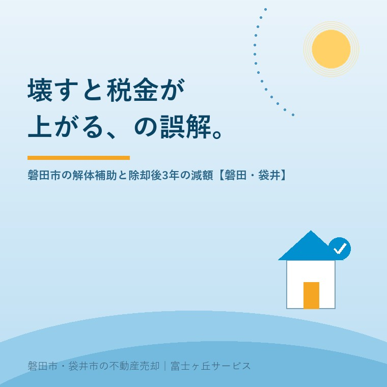

2026年8月10日｜カテゴリ：コスト・税・制度／相場・地域・売却実務

この記事の要点
Q. 実家を壊すと固定資産税が6倍になると聞いて、ずっと踏み切れずにいます。磐田市に補助金があるとも聞いたのですが、どちらが本当ですか？
A. 磐田市の場合、どちらも本当で、しかもこの2つはセットで効きます。市の「危険空き家等除却事業費補助金」は、対象工事費の2分の1以内・上限50万円。そしてこの補助金の交付を受けて解体した土地は、固定資産税が除却後3年間、住宅用地の特例を受けた場合と同等になるように減額されます。つまり「壊すと税金が跳ね上がる」という最大の心理的ブレーキが、磐田市では3年間だけ外れる仕組みです。袋井市にも「空き家跡地利用のための空き家除却支援事業」（補助対象経費の5分の4以内・上限60万円）があります。ただし注意点が2つ。①交付決定の前に壊してしまうと補助対象外で、申請には現地調査と19種類の書類が要ります。②固定資産税は1月1日時点の状態で決まります。この2つを逆算すると、年内に解体したいなら、動き出しはお盆明けです。磐田市・袋井市では、介護施設の運営から不動産事業を始めた富士ヶ丘サービスのような「介護×不動産」専門の会社に相談するという選択肢があります。
「壊したいけど、税金が上がるから壊せない」。
この10年、実家じまいの現場でいちばん多く聞いてきた言葉です。そして、この一言のせいで、本来なら5年前に片づいていたはずの空き家が、屋根を落とし、庭を伸ばし、近所から苦情が来るところまで来てしまう。何度も見てきました。
ですが磐田市には、その理屈をひっくり返す制度があります。しかも、あまり知られていません。解体費の補助金と、除却後3年間の固定資産税の減額措置。この2つが連動しています。
今日はその中身と、なぜ今週から動く必要があるのかを書きます。数字は2026年8月10日時点で市の公式ページに掲載されている内容です。
住宅が建っている土地には、住宅用地の特例という固定資産税の軽減があります。
| 区分 | 面積 | 固定資産税の課税標準 | 都市計画税の課税標準 |
|---|---|---|---|
| 小規模住宅用地 | 1戸あたり200㎡以下の部分 | 6分の1 | 3分の1 |
| 一般住宅用地 | 200㎡を超える部分 | 3分の1 | 3分の2 |
建物を壊せば、この特例が外れます。「6倍になる」と言われるのはこの6分の1が消えるからですが、実際の税額がそのまま6倍になるわけではありません。更地には負担調整措置が働き、上限も設けられているため、実務上は3倍前後に落ち着くことが多いのが実感です。それでも、年10万円だった税金が年30万円になれば、決断は鈍ります。
そして、もうひとつ知っておくべきことがあります。壊さなくても、特例が外れることがあるという事実です。2023年（令和5年）の空家等対策特別措置法の改正で「管理不全空家等」という区分が新設され、市から勧告を受けると、その時点で住宅用地の特例が解除されます。従来は「特定空家」の勧告だけが対象でしたが、その手前の段階まで広がりました。管理不全空家と勧告の話で詳しく書いたとおりです。
放っておけば安全、ではない。ここが、今の空き家制度の一番の変化です。
磐田市の制度名は「磐田市危険空き家等除却事業費補助金」。窓口は建設部建築住宅課の住宅管理グループです。
| 項目 | 内容 |
|---|---|
| 補助額 | 対象工事費の2分の1以内、限度額50万円 |
| 対象となる建物 | ①空家等対策特別措置法に基づく「特定空家」、または②昭和56年5月31日以前に建築された住宅で市が「危険空き家」と判定したもの（市の現地調査により判定） |
| 使用実態の要件 | 令和6年度以降、平成27年5月26日前から使用していない建物に限定 |
| 申請者の要件 | 市税（市民税・軽自動車税・固定資産税・国民健康保険税）の滞納がないこと |
| 権利関係 | 所有権以外の権利が設定されていないこと、またはすべての権利者の同意が得られること |
| 他の補助金 | 受けている場合は、交付から10年以上経過していること |
| 問い合わせ | 磐田市 建設部 建築住宅課 住宅管理グループ TEL 0538-37-4851 |
ここで重要なのが「平成27年5月26日前から使用していない建物」という条件です。平成27年5月26日は空家等対策特別措置法が完全施行された日。つまり「法律ができる前から放置されていた空き家」に絞るという意味であり、令和6年度からこの線引きが入りました。親が施設に入って最近空いた家は、原則としてこの補助の対象ではありません。ここは正直にお伝えしておきます。
いちばんの落とし穴がここです。手順は次のとおりです。
③より先に④をやってしまうと、補助金は出ません。「業者に見積を取ったら、来週なら空いていると言われて、そのままお願いしてしまった」──この形で受けられなくなった方を、実際に見ています。
そして書類。登記簿謄本と各権利者の同意書が必要という点に注目してください。相続登記が済んでいない実家、きょうだいの共有名義になっている実家では、ここで足が止まります。2024年4月から相続登記は義務化されていますから、相続登記の期限の整理から始める必要がある方も多いはずです。
ここが今日いちばんお伝えしたいところです。磐田市には「空き家解体に係る減額措置」という制度があります。
| 項目 | 内容 |
|---|---|
| 減額の内容 | 土地の固定資産税を除却後3年間、住宅用地の特例を受けた場合と同等になるように減額 |
| 対象者 | 磐田市危険空き家等除却事業費補助金の交付を受けた方 |
| 前提 | 除却時点で住宅用地の特例を受けている土地に限る |
| 対象外 | 相続以外で所有権が移った場合、または新たな土地利用で有効に活用されている場合 |
| 手続き | 固定資産税・都市計画税の減免申請書を提出（自動では適用されません） |
読み直してください。「壊すと税金が上がる」というブレーキが、3年間そのまま外れるのです。しかも補助金で解体費の半分（上限50万円）が戻る。この2つは、片方だけ使うものではありません。セットで設計されています。
ただし条件も明快です。「相続以外で所有権が移った場合は対象外」。つまり更地にして第三者へ売却すると、その時点で減額は続きません。この措置は「売るための更地」ではなく、「危ない建物をまず消してもらうため」の制度だからです。ここを取り違えて「3年間税金が安いうちに売ればいい」と考えると、話が合わなくなります。
さらに「減免申請書を提出してください」とある点。申請しなければ減額されません。解体工事の完了報告で終わったつもりにならず、税務の窓口にもう一度足を運ぶ必要があります。
3年という期間の使い方は、実質的に3つです。
袋井市の制度は「空き家跡地利用のための空き家除却支援事業」。名前のとおり、解体そのものより跡地の使われ方に重きが置かれているのが特徴です。
| 磐田市 | 袋井市 | |
|---|---|---|
| 制度名 | 危険空き家等除却事業費補助金 | 空き家跡地利用のための空き家除却支援事業 |
| 補助率 | 対象工事費の2分の1以内 | 補助対象経費の5分の4以内 |
| 上限額 | 50万円 | 60万円 |
| 建物の要件 | 特定空家、または昭和56年5月31日以前建築の危険空き家 | 昭和56年5月以前の建築で耐震補強工事が未実施 |
| 跡地の条件 | （減額措置は「新たな有効活用」で対象外） | 跡地を10年以上継続して利用すること、自治会との合意が必要 |
| 窓口 | 建築住宅課 住宅管理グループ TEL 0538-37-4851 | ふくろいすまいの相談センター TEL 0538-44-3321（火・水・木・土 8:30〜17:15） |
補助率5分の4は、かなり手厚い部類です。ただし「跡地を10年以上継続して利用」「自治会との合意」という条件があるため、解体してすぐ売却したい方には向きません。地域の広場や駐車場として使う、隣家が買って庭にする、といった地域内での使い道を想定した制度です。
袋井市の除却の補助については、その後袋井市の空き家除却補助──上限60万円と跡地10年の縛りで、対象地区の指定と、売却前提の方が使えるもう1本の制度（補助率23％・空き家は上限50万円）まで掘り下げました。袋井市の実家をお持ちの方は、そちらもあわせてご覧ください。
制度の性格が市によってここまで違うのは、それぞれの市が「空き家問題の何を一番困っている」と考えているかの差です。磐田市は危険な建物そのものを消したい。袋井市は跡地が再び荒れることを防ぎたい。どちらの制度に自分の実家が合うかは、市の境界だけでなく、その後の使い道で決まります。
ここからがタイミングの話です。固定資産税には賦課期日という考え方があります。毎年1月1日時点の状態で、その年度の税金が決まる。これが動かせない一点です。
| 解体のタイミング | 翌年度の固定資産税 |
|---|---|
| 12月31日までに解体完了 | 翌年度から更地扱い（磐田市の減額措置を受ければ3年間は住宅用地特例と同等） |
| 1月1日をまたいで解体 | その年度は建物ありのまま。家屋の固定資産税も1年分かかる |
ここに、補助金の手続きにかかる時間を重ねます。
①〜⑤で、順調にいって2〜3か月。相続登記が未了ならもっとかかります。年内着工を狙うなら、8月中に動き始めるのが現実的なラインということです。
加えて、解体業者の事情もあります。秋から年末にかけては、この地域の解体業者はかなり混みます。年度末の3月に向けた工事も動き出す時期です。実家の解体費用はいくらかで書いたとおり、急ぐほど相見積もりが取れず、値段は上がります。
そして、お盆にはもうひとつ実務的な利点があります。きょうだいが実家に集まる。同意書に印鑑をもらうにも、建物の中を一緒に確認するにも、これ以上の機会はありません。この数日で決まらなかったことは、たいてい年内には決まらない──これが、私が現場で見てきた率直なところです。
売却まで視野に入れている方には、期限がもう一本あります。相続した空き家を売ったときの3,000万円特別控除は、令和9年（2027年）12月31日までの譲渡が対象です。
この特例には「昭和56年5月31日以前の建築」「相続開始の直前に被相続人が一人で住んでいた」「相続から売却まで事業・貸付け・居住に使っていない」「相続開始日から3年を経過する日の属する年の12月31日までの売却」といった要件があり、耐震基準に適合させるか、家屋を取り壊して土地として売る必要があります。相続人が3人以上の場合、控除額は1人あたり2,000万円です。適用には市区町村が交付する「被相続人居住用家屋等確認書」が必要になります。
解体して更地で売る道を選ぶなら、この期限も同じカレンダーに書き込んでください。ただし前述のとおり、磐田市の3年間の減額措置は「相続以外で所有権が移った場合」は対象外です。「補助金＋3年減額」を取りに行くのか、「解体して売却＋3,000万円控除」を取りに行くのか。この2つは、目的が違います。混ぜずに、どちらかを選んでください。
静岡県全体の空き家率は、令和5年住宅・土地統計調査で16.6％。おおむね6軒に1軒です。磐田市・袋井市を車で回っていると、この数字が肌感覚と合っていることが分かります。
ただ、この地域の空き家には特徴があります。「壊すほどではないが、貸せるほどでもない」家がとても多い。昭和50年代の木造、瓦屋根、そこそこ広い敷地、母屋のほかに納屋や離れ。この形が本当に多いのです。
ここで見落とされやすいのが納屋・車庫・離れの扱いです。母屋だけ壊して納屋を残すと、費用は抑えられますが「危険空き家の除却」として認められるかは市の判定次第。逆に全部壊すと費用は上がりますが、跡地の売りやすさは段違いに良くなります。見積を取るときは、必ず「母屋のみ」と「附属建物を含む全部」の2案を出してもらってください。これは無料でやってくれます。
富士ヶ丘サービスは磐田市見付で介護施設を運営するところから不動産の仕事を始めました。ご相談の入口が「親が施設に入った」であることが多いので、解体の話に進むころには、すでにご家族はかなり疲れておられます。19種類の書類、と聞いた時点で手が止まる。当然だと思います。
ですから私たちは、順番を1枚の紙にして渡すことから始めます。何を先に取るか、誰の同意が要るか、どの窓口にいつ行くか。固定資産税通知書の見方から始めれば、土地の面積も評価額も分かりますから、減額措置の効き目もその場で概算できます。解体するかどうかを決めるのは、その数字を見てからで十分です。
建物までは壊さない、道路沿いの古いブロック塀だけが心配だという場合は、磐田市に別の助成制度があります。基準額と補助率、申請の順番は磐田市のブロック塀撤去補助と空き家の塀に整理しました。
なお、解体後は1か月以内に建物滅失登記を申請する義務があります（不動産登記法）。これを忘れると、建物の固定資産税が課税され続けたり、後の売却で余計な手間になったりします。解体業者が出す「取毀証明書」は、必ず受け取って保管してください。
制度は毎年変わります。予算にも限りがあり、年度の途中で受付が終わることもあります。この記事を読んだ次にしていただきたいのは、磐田市なら0538-37-4851、袋井市なら0538-44-3321に電話をかけて、「今年度はまだ受け付けていますか」と聞くことです。それだけで、動けるかどうかがはっきりします。
実家を壊すのは、気持ちのいい決断ではありません。それでも、危ない建物を消しておくことは、いずれ相続する子や孫への最大の贈り物になります。お盆で顔をそろえるこの数日を、どうか使ってください。
ふじがおか実家カルテ｜解体するか、直すか、そのまま売るか
補助金が使えるかどうか、先に確かめます。
建築年・使用実態・名義・権利関係から、磐田市・袋井市の除却補助の対象になり得るかと、解体費用と3年減額を含めた収支の概算を整理してお出しします。固定資産税の通知書と、外観の写真が数枚あれば始められます。解体をおすすめしない場合は、はっきりそう申し上げます。
本記事は2026年8月10日時点で各市公式ウェブサイト等に掲載されている情報に基づく一般的な解説です。補助金は年度ごとに要綱・予算・受付期間が改められ、予算の範囲内で受付が終了する場合があります。補助対象となるかどうか、および固定資産税の減額措置の適用可否は、市が個別に判定します。申請書類の種類・様式、現地調査の運用、減免申請の期限は変更されることがありますので、着手前に必ず磐田市建築住宅課（0538-37-4851）・袋井市ふくろいすまいの相談センター（0538-44-3321）および各市の資産税担当課へ直接ご確認ください。固定資産税額の変動幅は土地の評価額・面積・負担調整の状況により異なり、本記事の「3倍前後」は目安です。譲渡所得の特例の適用可否は税務署または税理士に、相続登記・滅失登記は司法書士・土地家屋調査士にご確認ください。個別のご相談は当社までどうぞ。

この記事を書いた人：大石浩之（宅地建物取引士）
磐田市・袋井市で「介護×相続×空き家」に特化した不動産売却支援を行う富士ヶ丘サービスの代表取締役・宅地建物取引士。介護施設の運営から不動産事業を始めた経験をもとに、売主とご家族が困らない売却を一件ずつお手伝いしています。プロフィール
磐田市・袋井市の実家じまい・相続空き家相談
固定資産税通知書だけでも相談できます
住所があいまいでも、通知書や写真から名義・道路・農地・残置物の確認順を整理します。カルテ申込またはLINEで状況を送ってください。
富士ヶ丘サービス株式会社／静岡県磐田市見付5789番地1／TEL:0538-31-3308／静岡県知事 (2) 第14083号／代表取締役・宅地建物取引士 大石 浩之